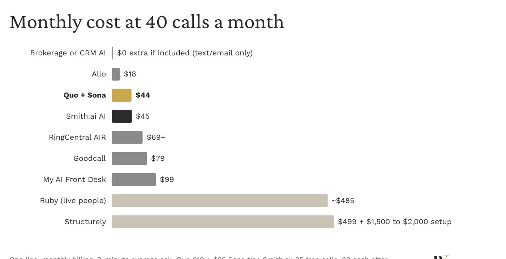
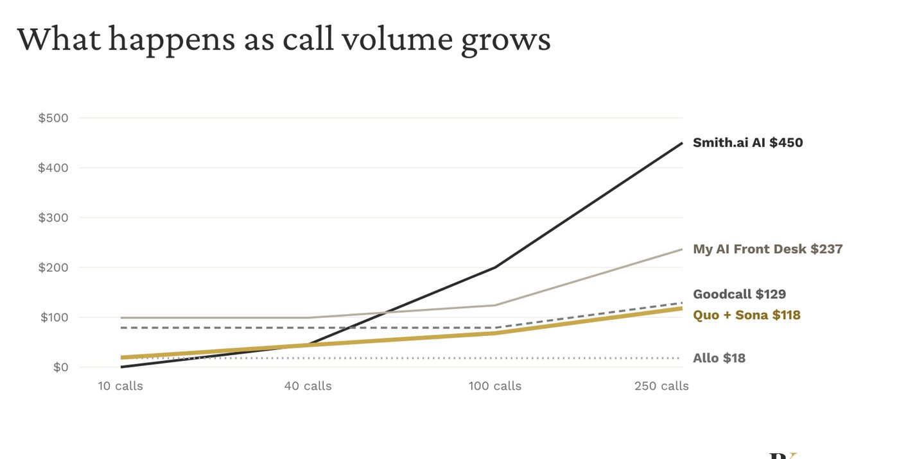

Agents
Listings, Zillow and Realtor.com profiles, MLS, yard signs, brokerage rosters.
Key Notes · Business systems
Why every business builder needs a business line, and how to choose who (or what) answers it when you can't.
Download the deck (PDF) Jump to the checklistThe short version
Step one isn't optional. Get a business line and take your personal number off every public page.
Step two is a choice: who picks up that line when you're with a client, on a site visit or done for the day.
Listings, Zillow and Realtor.com profiles, MLS, yard signs, brokerage rosters.
Proposals, vendor registrations, conference and training bios, course pages.
Invoices, portfolio sites, marketplace profiles, press kits.
Google Business Profile, LinkedIn, email signatures, business cards.
Search engines index it. Data brokers attach it to your home address and family.
In a SIM swap, a scammer gets your carrier to move your number, then resets your logins.
Spam, scams and people you never meant to give direct access to.
A business line can be forwarded or shut off when you pivot or step back. Your cell keeps ringing.
Consumer fraud guidance recommends using an alternate number, like a VoIP line, for public and business use.
feared for their personal safety or the safety of their personal information in 2024
showed properties alone
You meet strangers alone. A business line means they never have your personal number, the one that leads to your home address.
Source: National Association of REALTORS, 2024 Member Safety Residential Report.
| Option | Good for | Watch out for |
|---|---|---|
| Google Voice | Free or cheap; rings your existing phone | Basic features; no AI answering; moving it later means porting |
| VoIP phone app Quo, Allo, RingCentral | Shared inbox for partners, texting, recording, AI answering add-ons | Per-user monthly fee; switching later means porting the number |
| Second cell plan | Simple; works anywhere | Second device or eSIM; no team sharing; moving it later means porting |
Every option locks you in a little: switching providers later means porting the number (possibly for a fee), usually 1 to 2 weeks. So pick the line and the answering setup together. AI add-ons like Sona only run on their own provider's numbers. Standalone answering services work with any line through call forwarding.
You get the line and the AI in one app.
Quo Sona · Allo · RingCentral AIR
Forward a line you already have to it.
Smith.ai AI · Goodcall · My AI Front Desk
A person answers. Billed by the minute or call.
Ruby · Smith.ai live
Texts, emails and calls leads to qualify them.
Structurely (real estate) · CRM assistants
If you're getting a new line anyway, the first group does both jobs at once.
Pricing is credit-based on top of a Quo plan: about 10 calls a month free, then $25 for 40 calls, $49 for 100, $99 for 250 and $199 for 600. Quo plans run $15 to $35 per user per month billed annually, or $19 to $47 monthly.


| Option | Keep a line you have | Human backup | CRM link | Free to test |
|---|---|---|---|---|
| Quo + Sona | No, moves to Quo | No | HubSpot, Salesforce; others via Zapier | 7-day trial after paid plan |
| Allo | No, moves to Allo | No | HubSpot, Pipedrive, Salesforce, Zoho | Check |
| Smith.ai AI | Yes, forward it | Yes, live agents | Via Zapier | 25 calls a month free |
| Goodcall | Yes, forward it | No | Via Zapier | 14-day trial |
| My AI Front Desk | Yes, forward it | No | Built-in CRM | 7-day trial |
| Ruby | Yes, forward it | Humans only | Check | No |
| Structurely | Not a phone answerer | No | Follow Up Boss (real estate) | No; setup fee |
"Check" means not confirmed in research. Ask the vendor.
| Service | Connects? | How |
|---|---|---|
| Quo (+ Sona) | Yes, official | One-click connector, included with every Quo plan |
| Allo | Yes | Add it yourself as a custom connector |
| Smith.ai | Through Zapier | Zapier passes Smith.ai actions to your assistant |
| Google Voice | No | Only the voicemail emails it sends to Gmail |
Summarize calls and texts, flag missed callbacks, draft follow-ups, update contacts.
Answer or place calls. The phone agent answers; the assistant works with what it leaves.
Before you connect: the assistant sees your call transcripts. Check your clients' rules first, and keep text sending on "ask before sending." Each person connects their own phone account.
If your clients are government, law enforcement or universities
One of about a dozen all-party consent states. Recording without it is a felony.
You can consent for yourself. But on calls across state lines, the strictest rule usually applies.
Agencies and schools often limit recording and AI tools. Ask before an AI picks up their calls.
Turn on an automatic recording notice (Quo has one) and keep sensitive client calls on a person, not the AI.
Not legal advice. Check with counsel or your client's compliance office if calls could involve sensitive information.
A handful? A good greeting and auto text-back may be enough.
Smith.ai is the only AI option here with live backup.
If yes, keep AI on general inquiries and route clients to you.
More answered calls means more leads. Pick the tool for the goal.
Starting fresh
New line plus AI answering in one app. About $44 a month to start; stays cheap as calls grow.
Best for: most solo builders and partners sharing a line.
Want a person in the loop
Get any business line, forward it to Smith.ai. Free under 25 calls, live agents for tricky calls.
Best for: client work where a wrong answer costs you.
Strict client rules
Business line, clear greeting, callback within a set window. Add AI later for general inquiries only.
Best for: government, law enforcement and campus clients.
Want the full deck to save, print or share?
Download the PDFQuestions from Between Keys. Research and explanations by my AI assistant. Prices change often; confirm with each vendor before you buy. This is what I'm learning, not advice.